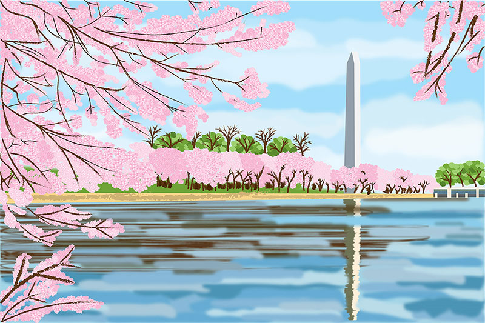
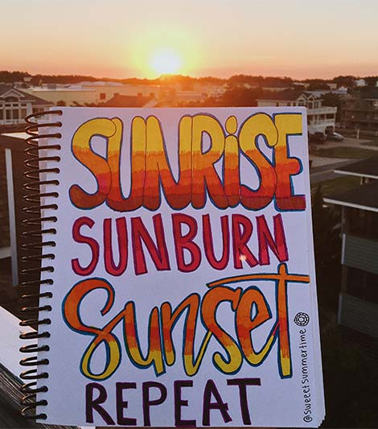
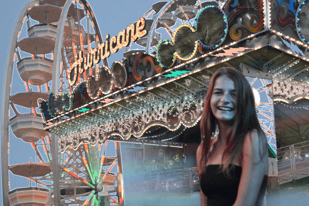
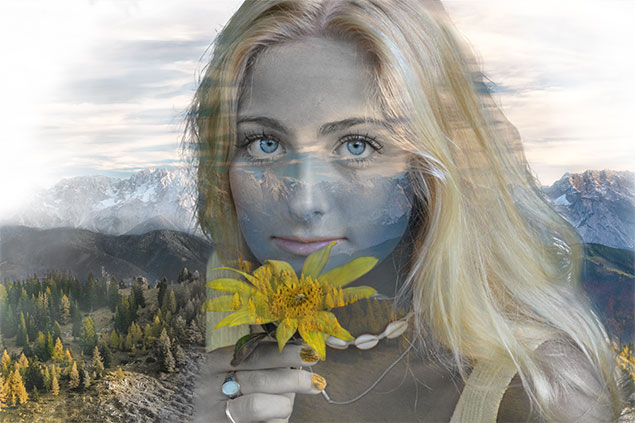
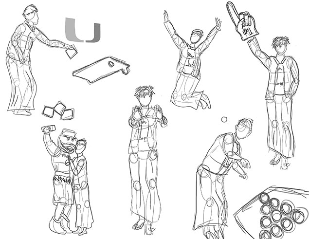
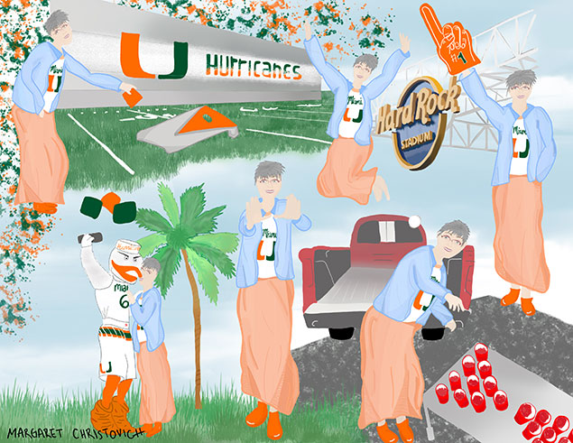
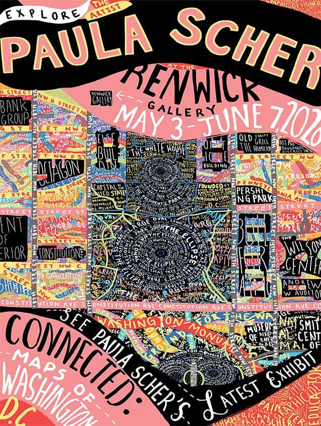
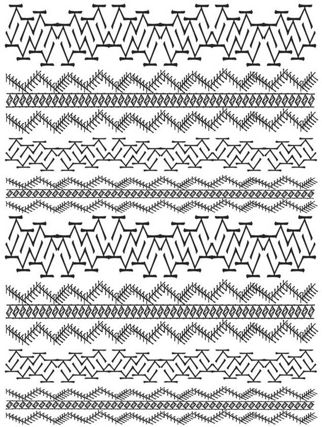

I haved enjoyed working with the Adobe suite to create some graphic design work.

Adobe Illustrator- Vector Landscape done of the cherry blossoms in Washington, D.C.

Hand-done calligraphy on journal page taken in OBX

Adobe Photoshop- Used my own photography from the boardwalk in Myrtle Beach and brush tools to create.

Adobe Photoshop- Double exposure project combining photographs

Adobe Photoshop- Rough draftdeveloping character development

Adobe Photoshop- Character development of my grandma at UMiami

Adobe Photoshop- Gallery Poster made inspired by work of Graphic Designer, Paula Scher. Type is hand-done using a wacom drawing tablet

Adobe Illustrator- Pattern made entirely from the letter "K" in the same font.